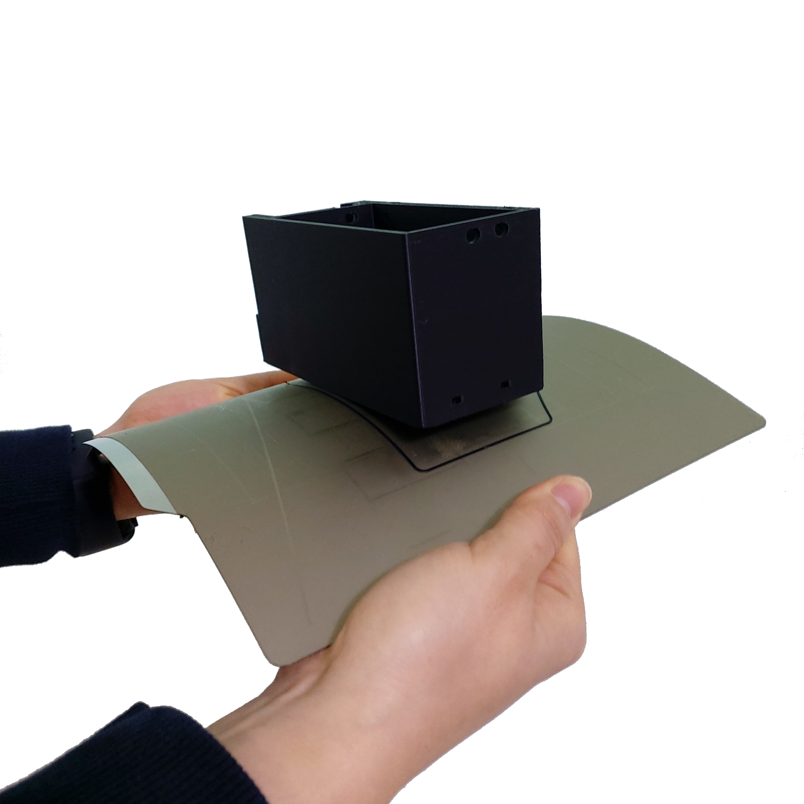

작동 테스트
전원 연결
Step.1
{kind=link}
● 검정색 전원 케이블을 찾아줍니다.
Step.2
{kind=link}
● 전원 케이블을 SMPS 파워 아래 전원 커넥터에 연결합니다.
● 연결 후 전원 플러그를 끼우고, 전원 스위치를 켭니다.
※ 전원이 켜지지 않는 다면, 전원이 켜지지 않는 경우 항목을 확인하세요.
※ 전원이 켜지면, “베드 레벨링 값을 불러올 수 없습니다.” 에러가 뜰텐데, 조립 후 레벨링 작업이 안되어 있으면 안내되기 때문에, 신경쓰지 않으셔도 됩니다.
원점 이동(Home) 점검
Step.3
{kind=link}
● 전원을 켜면, 디스플레이도 켜집니다. 첫 화면은 메인화면이라 부릅니다.
● 화면의 상태 값과 로고 이미지 등이 깨진 것이 있는지 확인합니다.
● 표시된 상태 값은 예시입니다. 상태 값 설명은 매뉴얼 뒷부분에 후술합니다.
Step.4
{kind=link}
● 메인 화면에서 메뉴(1) 버튼을 선택합니다.
● 이후 나타나는 여러 메뉴 중 ‘이동’(2) 버튼을 선택합니다.
Step.5
{kind=link}
● 이어 ‘Home’(1)와 ‘X’(2) 버튼을 누르고, 작동하는 모습을 확인합니다.
● Auto home이라는 기능로도 불리며, 원점으로 이동하는 기능으로 자주 사용됩니다.
※ 예열을 권장하지만, 조립 후 첫 작동이기 때문에 예열은 하지 않아도 됩니다.
Step.6
{kind=link}
● 익스트루더가 왼쪽 끝까지 도달하는지 확인합니다. 도달한다면 Step.7을 진행합니다.
● 도달하지 않는 경우, 손으로 왼쪽 끝까지 밀어봅니다.
-손으로 밀었을 때, 뻑뻑함이 느껴지거나 끝까지 도달하지 못하면, 도금봉의 마찰이나,
벨트 텐션에 의한 마찰일 가능성이 있습니다. 도금봉에 구리스를 발라주고, 벨트 텐션을
살짝 풀어줍니다. (X 텐션 조정)
-손으로 밀었을 경우 끝까지 도달한다면, 모터 감도를 조절해봅니다. (세부조정-모터감도)
-작동시 움직임이 미동도 없을 정도면, 모터가 움직이지 않는 경우 를 확인해보세요.
Step.7
{kind=link}
● 이어 ‘Y’(1) 버튼을 누르고, 작동하는 모습을 확인합니다.
Step.8
{kind=link}
● 베드가 뒷쪽 끝까지 도달하는지 확인합니다. 도달한다면 Step.9을 진행합니다.
● 도달하지 않는 경우, 손으로 뒷쪽 끝까지 밀어봅니다.
-손으로 밀었을 때, 뻑뻑함이 느껴지거나 끝까지 도달하지 못하면, 도금봉의 마찰이나,
벨트 텐션에 의한 마찰일 가능성이 있습니다. 도금봉에 구리스를 발라주고, 벨트 텐션을
살짝 풀어줍니다. (X 텐션 조정)
-손으로 밀었을 경우 끝까지 도달한다면, 모터 감도를 조절해봅니다. (세부조정-모터감도)
-작동시 움직임이 미동도 없을 정도면, 모터가 움직이지 않는 경우 를 확인해보세요.
Step.9
{kind=link}
● 이어 ‘Z’(1) 버튼을 누르고, 작동하는 모습을 확인합니다.
Step.10
{kind=link}
● 익스트루더와 베드가 중앙으로 위치하며, Z축 방향으로 내려와서 멈춘다면 다음을 진행합니다.
● “원점이동 실패, 재부팅 필요” 에러나타날 수 있습니다. 이 에러는 두 가지 경우에 나타납니다.
※ X,Y,Z을 연속으로 실행하는 버튼이 Home 버튼입니다.
※ Z Home 이 완료되었을 때, 노즐이 정중앙에 위치하는 것이 아니라 중앙에서 살짝 왼쪽 앞에 위치하는 것은 정상적인 작동입니다.
{kind=link}
마지막으로 센서의 높이를 확인합니다. 레벨링 센서는 노즐보다 약간 위에 있어야 좋습니다. 그렇다고 너무 높게도 안됩니다. 레벨링 센서가 너무 높으면, 정상적인 Home 을 할 수 없으며, 레벨링 센서가 노즐보다 낮으면, 레벨링을 제대로 진행할 수 없습니다.
※구리스 바르기
{kind=link}
● 구리스는 사진과 같이 흰색 통에 담겨 있으며, 부속품과 함께 동봉되어 있습니다.
● 나무젓가락, 막대를 이용하여, 약간 덜어낸 다음, 리드스크류에 발라줍니다.
{kind=link}
● 리드스크류의 왼편, 오른편 모두 얇게 발라줍니다.
팬 점검
Step.11
{kind=link}
● 메인 화면에서 메뉴(1) 버튼을 선택합니다.
● 이후 나타나는 여러 메뉴 중 ‘준비/점검’(2) 버튼을 선택합니다.
● ‘준비/점검’ 메뉴는 준비, 프린터 점검을 하는 메뉴들로 구성되어 있습니다.
Step.12
{kind=link}
● 첫 번째 점검인 ‘팬 점검’(1) 버튼을 누릅니다.
● 메인팬 작동을 확인합니다.(V2에서 메인팬은 대기중에 작동하지 않습니다.)
● 작동하지 않으면 취소 버튼을 누르고 배선을 점검합니다.
Step.13
{kind=link}
● 다음은 보조팬을 테스트합니다. 보조팬이 작동하는지 확인합니다.
● 작동하지 않으면 취소 버튼을 누르고 배선을 점검합니다.
● 보조팬 테스트 중에는 메인팬은 작동하지 않습니다.
※ 익스트루더의 보조팬이 사진처럼 덕트에 끼워져 있는지 확인합니다. 살짝 들려서 배송될 수 있기 때문에, 테스트 중에 보조팬을 덕트에 끼워줍니다.
{kind=link}
예열 점검
Step.14

● 이어서 두 번째 점검인 ‘예열’(1) 버튼을 누릅니다.
● 누르게 되면 예열이 시작됩니다. 온도와 경과시간은 ‘확인’ 버튼을 눌러야 표시됩니다.
Step.15
{kind=link}
● 노즐 예열이 완료되면, 자동으로 베드 예열로 넘어갑니다.
● 온도와 경과시간은 ‘확인’ 버튼을 눌러야 표시됩니다.
Step.16
{kind=link}
● 예열 테스트가 끝나면 결과를 알려줍니다.
● 노즐은 3분 이상, 베드는 5분 이상 소요되면, 테스트 완료되지 않습니다.
● 확인을 누르고 다음 테스트를 준비합니다.
XY 점검
Step.17
{kind=link}
● 3D 프린터 위에 놓인 물건이 없는지 확인 후, ‘XY 점검’(1) 버튼을 누릅니다.
● 따로 팝업창이 뜨지 않으며, 바로 X,Y의 동작 테스트가 진행됩니다.
● X,Y값이 표시되면 X,Y의 배선, 벨트 텐션이 정상 범위에 있음을 뜻합니다. 에러없이 테스트가 완료되었으면 Step.20 을 진행합니다.
Step.18
{kind=link}
● 만일 벨트 장력이 약하다면 해당, 축의 벨트가 약하다고 표시됩니다.
● 벨트 장력을 조절하고 다시 테스트합니다.
Step.19
{kind=link}
● X, Y모터가 배선이 잘못된 경우라면, 잘못된 배선을 감지하여, 알려줍니다.
● X, Y모터의 배선을 다시 한번 더 점검합니다.
필라멘트 점검
Step.20
{kind=link}
● 다음 점검으로 ‘필라멘트’(1) 버튼을 누릅니다
● 이번 점검은 예열이 필요한 상황이므로, 예열이 안되었다면, 예열하라는 경고 문구가 뜹니다. 예열 완료 후 다시 ‘필라멘트’(1) 버튼을 눌러줍니다.
Step.21
{kind=link}
● 익스트루더의 스프링을 19~20mm길이 만큼 조여줍니다.
● 이 범위는 권장 범위로 조립상태에 따라 범위를 벗어날 수 있습니다.
Step.22
{kind=link}
● 필라멘트를 삽입하기 위해서 끝부분을 뾰족하게 2번 잘라줍니다.
※ 필라멘트가 많이 휘어있다면, 삽입이 안될 수 있으니 곧게 펴줍니다.
● 잘라준 뒤 삽입합니다. 삽입 후, 확인 버튼을 누릅니다.
※ 필라멘트가 삽입되지 않는다면, 필라멘트가 삽입되지 않는 경우 항목을 참고하세요.
Step.23

● 필라멘트가 삽입되면서 토출되기 시작합니다.
● SGV는 E 모터의 토출 힘을 의미하며, 정상 범위 밖의 값이 감지되면, 감지된 횟수가 증가합니다.
※ 감지횟수는 10회 이하가 좋으며, 40회가 넘어가면 점검이 필요합니다.
감지된 횟수가 많은 경우에는 다음과 같은 과정을 진행해줍니다.
● 익스트루더 앞부분 스프링을 먼저 살짝 풀고 다시 시도해봅니다.
● 예열을 하고 충분히 시간이 지난 뒤(10분 정도) 다시 시도해 봅니다.
● 익스트루더 앞부분 스프링을 완전 풀고, 내부에 이물질이나 찌꺼기가 있는지 확인합니다.
● 위 단계를 진행하고도, 감지된 횟수가 나타나지만 필라멘트가 토출이 잘 되는 상황이라면, 다음 단계로 넘어갑니다.

※ 필라멘트가 토출되지 않는다면, 위 사진 처럼 익스트루더 정면의 스프링을 끝까지 풀어서 내부를 한번 살펴보시기 바랍니다.
필라멘트가 경로로 삽입이 잘 되도록, 뾰족하게 잘라주시고 곧게 펴주시기 바랍니다.
레벨링이란?
레벨링은 노즐과 베드 사이의 간격을 조절하는 과정입니다. 메탈 V2 같은 경우 오토레벨링이 적용되어 있습니다. 오토레벨링이라 하더라도 초반의 약간의 설정이 필요합니다. 오토레벨링을 설정하는 순서는 크게 좌우 수평 맞추기, 실시간 레벨링 보정이 있습니다.
{kind=link}
조립과정에서 좌우의 수평이 맞지 않은 경우가 있을 수 있습니다. 이런 경우 오토레벨링이 적용된다 하더라도 특정 부분에서 레벨링이 약간씩 안 맞을 가능성이 있습니다. 이런 경우를 막기 위해 좌우 수평을 조절해야 합니다. 위의 그림은 이해를 돕기 위해 과장된 것입니다. 이를 조정하는 과정은 Step.24 에 설명되어 있습니다.
{kind=link}
오토레벨링이 적용된 경우, Z축으로 원점 설정(Auto home)을 하면 대부분 노즐이 베드에 닿지 않습니다. 그림과 같은 모습입니다. Z축 원점설정을 하였는데 보드가 프로그램 상에서 인식하는 원점이랑 실제의 원점이랑 같지 않다면, 출력을 하더라도 허공에서 출력하거나, 잘못된 높이에서 출력할 가능성이 높습니다. 이러한 상황에서 노즐과 베드 사이의 간격을 조절해 주기 위한 값이 ‘Z 프로브 오프셋’입니다.
조절하는 방법은 실제로 출력 테스트를 하면서 적당한 값을 찾고 저장하는 것입니다.( Step.28 에서 상세 설명) 이렇게 좌우 수평과, 레벨링 보정까지 마치게 되면, 레벨링이 완료되게 됩니다.
※ 필라멘트가 삽입된 상태에서 예열을 하고 레벨링을 진행하는 것을 권장드립니다.
Z수평조절
Step.24
{kind=link}
● 다음 점검으로 ‘Z수평조절’(1) 버튼을 누릅니다.
Step.25
{kind=link}
● 첫 번째로 X의 좌우 수평을 맞추기 위해 Z축이 상승하고 내려옵니다.
● 내려오면, 히트베드의 꼭지점의 높이를 측정하고 화면에 표시합니다.
● 다음 과정을 통해 베드의 각 꼭지점 높이를 유사하게 맞추어야 됩니다.
Step.26
{kind=link}
● 맞추고자 하는 부분을 정합니다. (가장 오차가 큰 베드 왼쪽 앞 2번을 예시로 합니다.)
● 사진과 같이 나비너트를 돌려줍니다. (반시계=값 증가, 시계=값 감소)
● 나비너트를 조절하고, 화면의 2번 부분을 터치하여 값을 확인합니다.
Step.27
{kind=link}
● 베드의 4군데의 값이 비슷해졌다면, ‘뒤로’ 버튼을 눌러 다음을 준비합니다.
● 완료 후 실제 눈으로도 비틀어진 부분이나 수평이 맞는지 확인합니다.
● 4군데 값이 아주 비슷할 필요는 없으며, 0.1 단위 까지만 맞추면 됩니다.
※ 하강 과정시 원점이동 실패라는 문구가 뜨면, 원점이동 실패의 대처 방법 을 확인하세요.
레벨링
Step.28
{kind=link}
● 다음 점검으로 ‘레벨링’(1) 버튼을 누릅니다.
● 이번 점검은 예열이 필요한 상황이므로, 예열이 안되었다면, 예열하라는 경고 문구가 뜹니다. 예열 완료 후 다시 ‘레벨링’ 버튼을 눌러줍니다.
Step.29
{kind=link}
● 레벨링이 시작되면, 원점이동(auto home) 과정 이후 출력이 진행됩니다.
● 왼쪽 앞에서 시작해서 지그재그로 움직인 뒤, 왼쪽 뒤에서 끝납니다.
● Step.30을 참고하여, 레벨링 도중에 높이를 조절해 주셔야 적절한 높이를 맞출 수 있습니다.
※원점이동(auto home) : xyz의 시작점을 지정하는 과정
Step.30
{kind=link}
● 라인 상태를 확인하면서, 실시간으로 조그버튼을 돌려줍니다. 시계 방향으로 회전 시 노즐 베드 간격이 커지며, 반시계는 좁아집니다.
● 간격이 클수록 라인이 얇게 나오며, 좁을수록 라인이 두껍게 나옵니다. 너무 얇아도 안되고, 너무 두꺼워도 출력에 문제가 됩니다.
Step.31
{kind=link}
● Z 프로브 오프셋의 적정 값이 정해졌다면, ‘저장’(1) 버튼을 누릅니다.
● ‘저장’ 버튼을 누르면 레벨링이 완료됩니다.
※ 레벨링 라인이 제대로 그려지지 않은 상태라면, 출력이 제대로 되지 않습니다. 레벨링 라인을 정확히 점검하시고 넘어가시기 바랍니다.
※ 레벨링 중 필라멘트가 뭉치거나 라인이 그려지지 않는다면, 베드와 노즐을 가까이 붙이는 방향으로 값을 조절해 보시기 바랍니다.
※ 구간별로 레벨링이 덜되거나 되지 않는 부분이 있다면, 메뉴 - 세부조정 - Z보정 을 진행해보시기 바랍니다.
필라멘트 삽입/제거
Step.32
{kind=link}
● 3D 프린팅 출력에 앞서 필라멘트가 연결되어 있어야 합니다.
● 필라멘트의 삽입, 제거, 무게설정 과정을 알아보도록 하겠습니다.
● 메인화면에서 ‘메뉴’(1)-‘삽입/제거’(2) 버튼을 눌러줍니다.
Step.33

● 이후 ‘삽입’(1) 버튼을 누릅니다. 예열되지 않은 상태라면, 예열을 하라는 팝업 창이 표시됩니다.
● 예열이 완료되면, 다시 시도합니다.
※ 필라멘트가 삽입되지 않는다면, 필라멘트가 삽입되지 않는 경우 항목을 참고하세요.
Step.34
{kind=link}
● 필라멘트를 손으로 잡고 있는 상태에서 ‘삽입’(1) 버튼을 눌러줍니다.
● 버튼을 누르게 되면, 삽입을 위한 동작을 시작합니다.
● 토출이 완료되면, 팝업창이 뜹니다.
Step.35
{kind=link}
● 반대로 필라멘트 제거 과정은 예열된 상태에서 ‘제거’(1) 버튼을 누르면, 필라멘트 제거 동작을 시작합니다.
Step.36
{kind=link}
● 필라멘트를 삽입 후엔 필라멘트의 무게를 설정해 주시는 것이 좋습니다.
● ‘무게 설정’(1) 버튼을 눌러줍니다.
● 현재 필라멘트량과 필라멘트의 밀도를 볼 수 있습니다.
※ 무게 설정을 하게 되면, 필라멘트의 현재 잔여 필라멘트를 파악할 수 있고, 출력할 모형을 출력할 재료가 충분한지 알 수 있습니다.
Step.37
{kind=link}
● 새로 삽입된 필라멘트 무게가 1kg라면 ‘1kg’(1) 버튼을 누릅니다.
● 1kg로 설정할 것인지 팝업창이 나타납니다. ‘예’를 누릅니다.
Step.38
{kind=link}
● 1kg, 3kg 이외의 무게를 입력하고 싶을 경우에는, ‘Custom’(1) 버튼을 눌러 무게를 설정해 줍니다.
● 필라멘트의 밀도를 변경하려면, ‘밀도’(2) 버튼을 눌러 변경해 줍니다.
● 필라멘트 무게, 밀도를 설정하는 과정은 필수는 아니며 선택사항입니다.
출력하기
Step.39
{kind=link}
● 메인화면에서 ‘출력’(1) 버튼을 눌러줍니다.
● 출력 화면에서 ‘TFT SD’(2) 버튼을 눌러줍니다.
Step.40
{kind=link}
● 출력하고자 하는 파일을 선택해 줍니다.
● 재확인 차 팝업이 뜨면, 확인 버튼을 눌러 출력을 시작합니다.
완성된 출력물 제거하기
{kind=link}
※주의 : 완성된 출력물을 제거하기 위해서는 시트를 분리하여, 면적이 작은 출력물은 크게 상관 없지만, 면적이 큰 경우에는 천천히 살짝 구부린 다음 제거 해주시는 것이 좋습니다.
면적이 큰 출력물은 제거하는 과정에서 시트를 급격히 구부린다거나 힘을 너무 준 상태로 출력물을 제거하려다 보면, 시트가 뜯길 수 있으니 주의해주시기 바랍니다.
● 면적이 넓은 출력물은 베드를 약간 예열을 하고 제거하면 쉽게 제거 할 수 있습니다.
출력물 점검해보기
출력이 끝까지 된 경우에 점검해야 될 것과, 출력이 초반에 실패한 경우에 점검해야할 것들이 있습니다.
출력이 성공한 경우
출력이 성공하였다면, 살펴봐야할 부분은 한가지입니다. 바닥면을 보고 레벨링이 잘 되었는지 확인하는 일입니다.
{kind=link}
먼저 출력이 되더라도 바닥면을 보았을 때 라인들의 틈이 보인다면, 레벨링이 좋지 않고 이후 출력에서 문제가 될 가능성이 높습니다. 이는 레벨링을 재설정하고 다시 출력해보시기 바랍니다.
{kind=link}
또한 출력물을 옆면에서 보았을 때, 바닥면 쪽이 삐죽 튀어나온 경우는 이후에도 출력은 가능하지만, 바닥면 부분이 퍼지는 증상이 있습니다. 이의 경우에도 레벨링을 재설정하면 증상이 완화됩니다.
{kind=link}
바닥면이 깔끔하다면, 이는 다음 출력도 정상적으로 출력될 가능성이 높습니다. 이제 슬라이싱 프로그램 설치 로 넘어가시면 됩니다.
출력이 실패한 경우
출력이 실패한 경우라면, 바닥면에서 실패할 경우가 높습니다. 대부분 레벨링과 관련된 문제입니다.
노즐 아래에서 필라멘트가 뭉치는 경우, 바닥면에 붙어 있다가 떨어지는 경우
이 경우는 레벨링이 제대로 되지 않았거나, 레벨링의 상태가 좋지 않습니다. 레벨링 과정에서 ㄹ 모양의 라인들이 그려졌는지 확인하고, 레벨링센서의 높이를 점검 하시고, 이어서 안착불량을 점검 하세요.